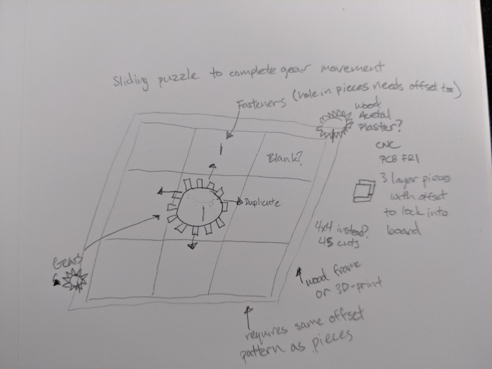

Michael Hsieh's Final Project Proposal

For the final project for HCDE 598 E, my proposal is to create a slide puzzle, reminiscent of those shown in Cogs, a puzzle game from 2009.

Bill of Materials
- Wood platform for mounting/border: Sourced May 22nd from Fluke scrap
- Acetal/Delrin for gears: Previously owned from Week 3/4
- Machineable wax for additional gears: Previously owned from week 6; purchase additional from Fluke if errors
- Plaster for gears: Previously owned from week 6
- Fasteners/Rivets: Previously owned from week 4
- FR1 for slide puzzle layers: Previously owned from week 5; acquire from leftovers or purchase from Fluke
- PLA for frame border thickness layers: Shared from HCDE 598 compatriots (Thanks Megha!)
Tasks/Techniques used
- Tolerances/Measurements: Measure thickness and dimensions of all materials
- 3D Design/Parametric CAD: Modeling all components in Onshape (and Rhino if necessary)
- 2D Design/Laser cutting: Creating wooden platform and gears for slide puzzle pieces
- Additive Fabrication: 3D Printing of borders to secure slide puzzle pieces
- Subtractive Fabrication: CNC/CAM milling of FR1 puzzle pieces
- Moving Mechanisms: Gears + sliding mechanism
Project Timeline
- May 28: Measure all materials + begin design in Onshape
- May 29: Complete designs in Onshape, CNC mill slide puzzle pieces, laser cut wooden platform, laser cut gears; saw machineable wax in half with MILL assistance?
- May 30: Begin Documentation?
- May 31: CNC mill wax; 3D Print "fitments" for slide puzzle pieces to slot into (contingency, leftover FR1 cuts as fitments instead, only need to be aligned); silicone mold of gears
- June 1: Begin assembly of platform + pieces; plaster cast gears (contingency, use extra laser cut gears instead)
- June 2: Complete Assembly
- June 3: Finalize Documentation
- June 4/5: Finalize Documentation